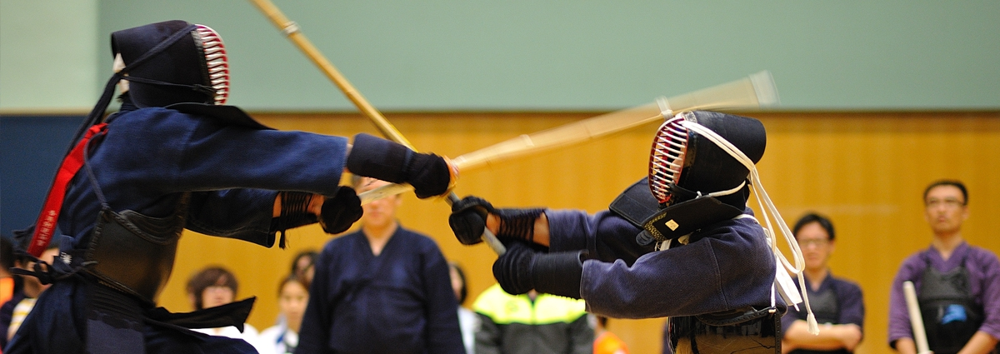
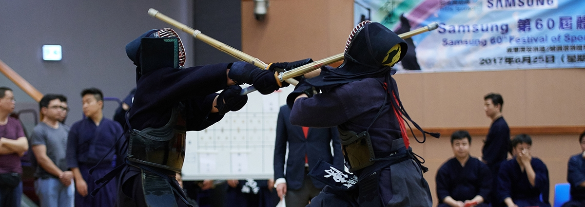

團體賽及個人賽假九龍公園體育館舉行。所有已登記普通會員均可報名，截止日期為11月30日。
秘書處發出的公告、公關聲明及緊急通知。
運動員遴選委員會已根據十月舉行的兩階段遴選賽，確認男子及女子代表隊名單。遴選報告及上訴期限已刊載於「企業管治」頁面。
因康文署場地維修，11月16日講習會改於石硤尾舉行，開始時間不變。
本會已採納更新的操守守則及投訴機制，於2027年1月1日起生效。
講習會、比賽、段級審查及訓練班，均可網上報名及繳費。
應邀老師、活動規則及指引。
FIK 規則、對陣表及遴選機制。
考綱、修業年限規定及合格名單。
常規班、暑期班、兒童班及體驗班。
由本會老師及特約作者撰寫的技術、禮儀及歷史文章。
拆解裁判判定有效打突時所看重的三個要素。
一本目至十二本目有何變動，審查員如何理解新修訂。
行禮、座次及每次稽古背後儀式的意義。
本會屬會道場遍布港島、九龍及新界，定期舉辦劍道、居合道及杖道訓練。每個道場頁面列出地區、訓練時間、網站及社交媒體連結，以及已登記會員名單。